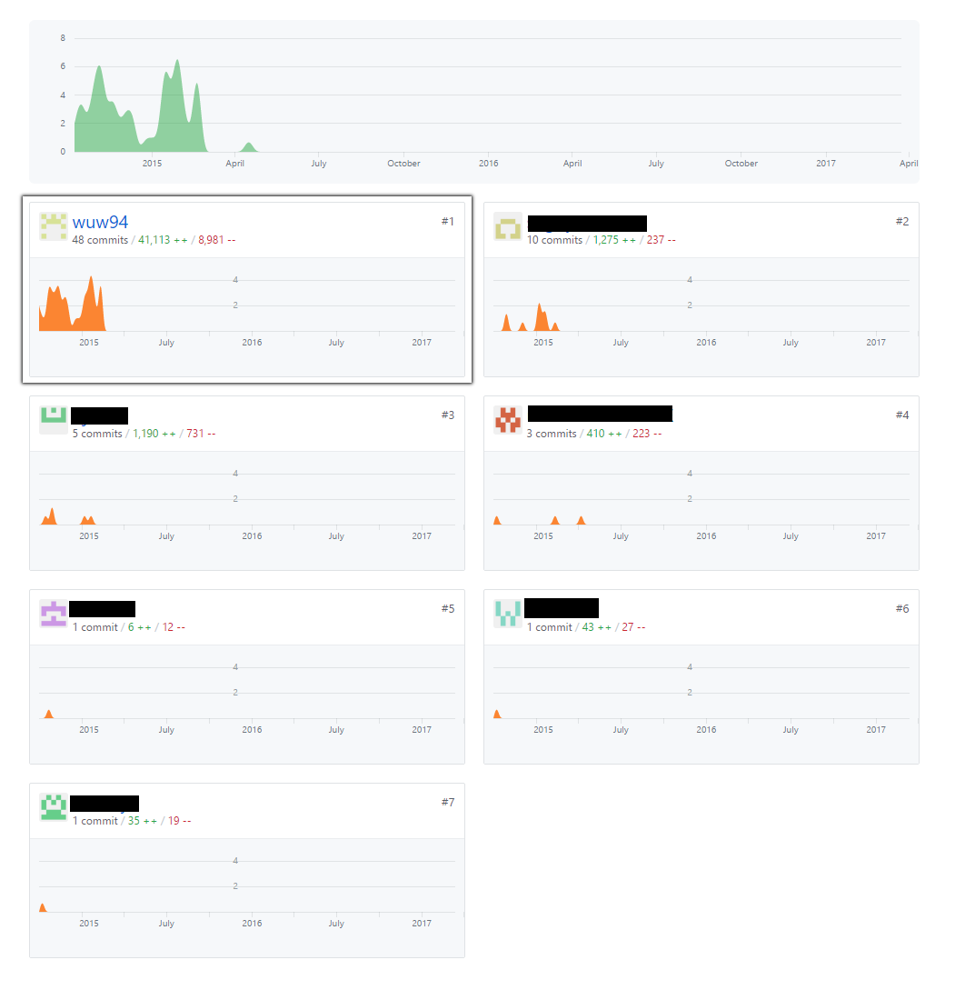

Leading A Team
Working on a project isn't all about programming. Sometimes you're going to have to lead, whether you like it or not. I learned that the hard way when I worked on Metroidvania.
A little background
I remember that VGDC had a particuarly large number of members this year. We were used to having around 20 or so members, but just for this year, we ended up having around 130 members. We all like to praise our club president, Sean Creveling, for doing such a great job of recruiting, but it was a slight problem because there weren't enough project pitches to make up for the massive number of members. VGDC was even forced to create new project pitches to keep the teams at a healthier size. But I don't think that was nearly enough. Our team ended up as 15 people –– which I think is way too much for our purposes.
The problem
Most people think that more labor means more progress, but this isn't the case for programming. With each additional programmer comes an additional person I need to show the ropes for. No programmer will be able to get into the groove of working with the team from the get-go. You need to first learn how to use the frameworkSoftware used for development., and then you need to learn how the existing code works.
I'd like to stress again that I was the most experienced programmer in our team. For all the other programmers, this was the first game project they ever worked on (remember, around 80% of VGDC were new members). Getting these programmers situated and ready to work was not easy. There's a lot to learn:
- Git
- Unity
- C#
- Learning the existing codebase
Look, these are not simple things to learn, and these students didn't have all the free time in the world either. I estimated that it would take me the entire year before everybody was situated. And in actuality, I wasn't able to get everybody situated. I hated it. I was forced into leading, did a poor job, and it wasn't my purpose of being in VGDC. I didn't want to teach. I wanted to program.
What frustrated me
In Metroidvania, I spent my entire time showing the ropes to the other programmers when they were available. And when they weren't, I worked on the programming. I thought this was a pretty good option; I wanted to do programming, but I was obligated to teach. So why not do both, right? It worked at first, but after a while, a problem emerged that I didn't realize until much later. It was something I didn't even know was possible, but right in front of me the entire time. I programmed too fast. What?

The other programmers took a much longer time understanding how I implemented features than it took for me to design and implement them. It's not because I wrote the code poorly or that it's difficult to understand. I always spent extra time to make sure my code was very understandable, and I commented everything. I even spent the majority of our program meetings explaining how the features were implemented. But they just had never seen complex code like the ones I wrote.
My frustrations weren't about me doing the heavy lifting. It wasn't about my teammates being too slow either. I was frustrated because I was put in a position where none of my options were good. Even now, I'm not sure about what I should have done.
- If I don't teach, I get a lot of experience, but the other programmers don't get any.
- If I only teach, the other programmers get a lot of experience, but I don't get any.
- If I work fast, Metroidvania would be finished and leave a better impression, but the other programmers will never have the opportunity to contribute.
- If I work slower, other programmers can contribute, but Metroidvania would not be finished and would leave a bad impression.
What infuriated me
Not everybody was super eager to learn either. To me, that was the most infuriating thing. I'm going out of my way to prepare these underclassmen not only for this project but for many more to come. If they decide that they don't really care, they're basically throwing my efforts into the drain. I cant force them to learn either, since they're not being paid to work and I wasn't being paid to teach.
What made me happy
Some people were very eager to learn. That's what makes me happy. Even though I didn't join Metroidvania to teach, if I see that somebody is very eager to learn something, then I'm equally eager to teach them. I think that these people are worth investing my time into. In our team, it was Juston that stood out as the one who was eager to learn. He was a freshman at the time, just entered college. I gave him a little extra attention, and I think it was well deserved. He ended up becoming a hackathon coordinator and told me he's graduating a year and a half early or something. It makes me happy to see that I made a difference in somebody.